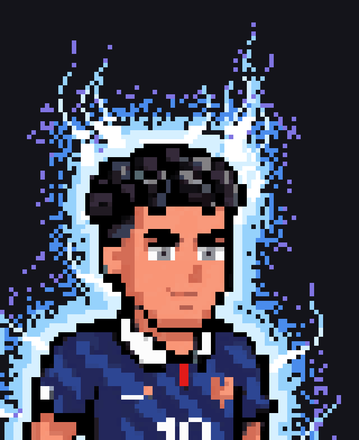
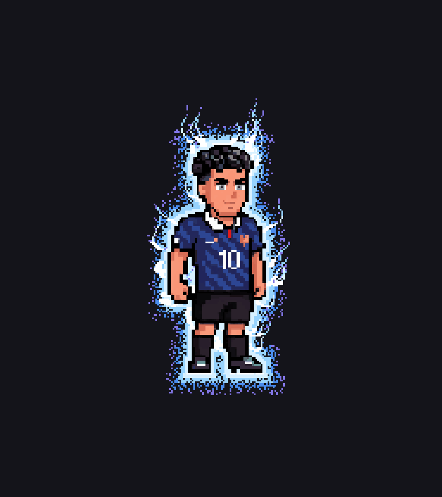
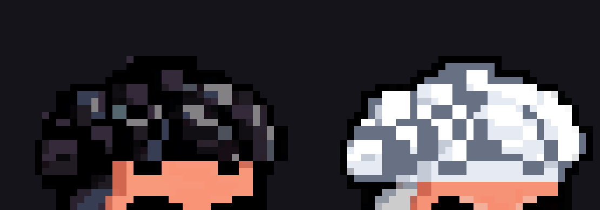
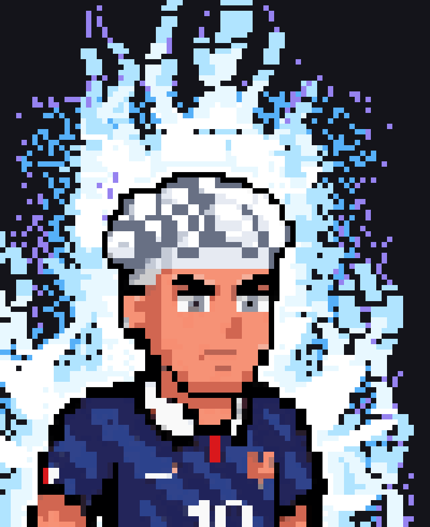
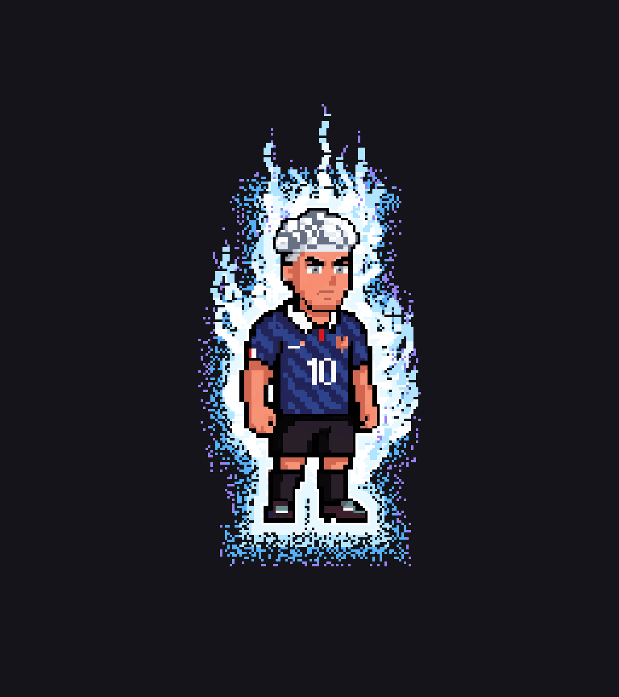
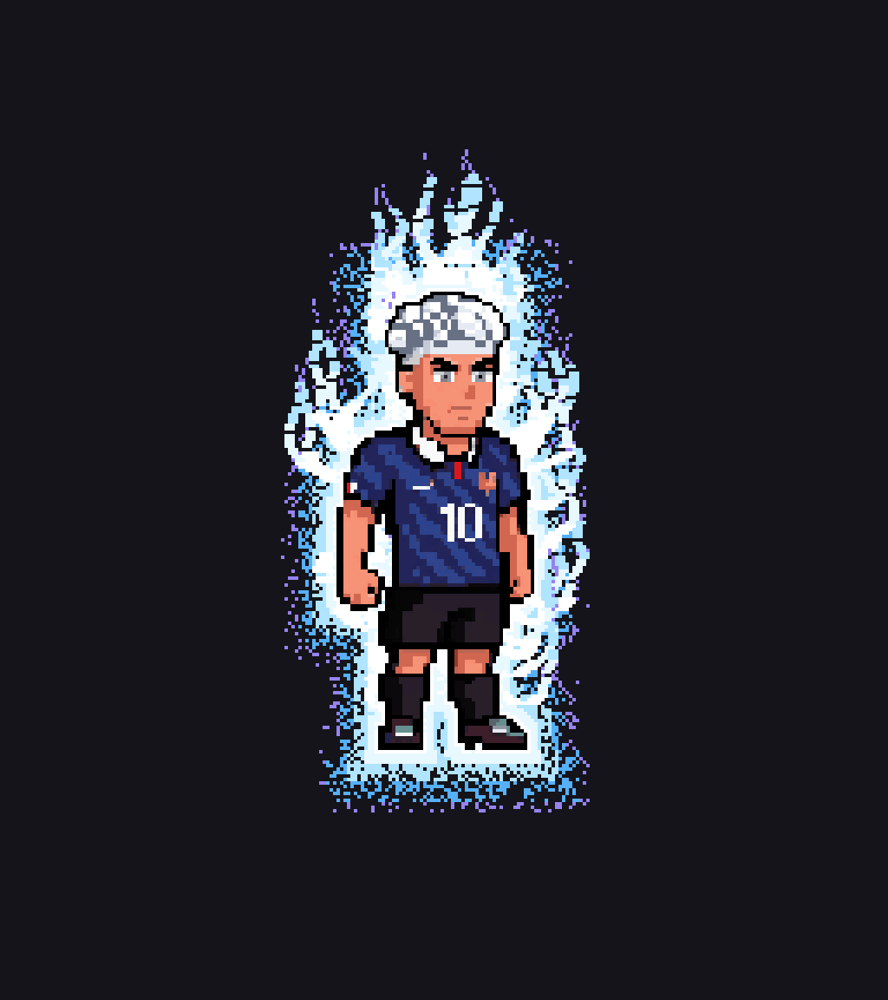

1. Ultra Instinct Sign
Black hair, calm and forward-facing

Idle


Blue Evolved → UI Sign — 17 frames


Stills

Commit 29b9295
The aura is now built against each animation frame's own silhouette, so the dark ring no longer appears once the body moves — 0 dark pixels on every frame of every UI sequence. Mastered's hair is fully white/silver with no black fill.
Sign black · Mastered fully white/silver — 13×

Black hair, calm and forward-facing


Hair now fully white/silver; Sign's animation, serious brow




